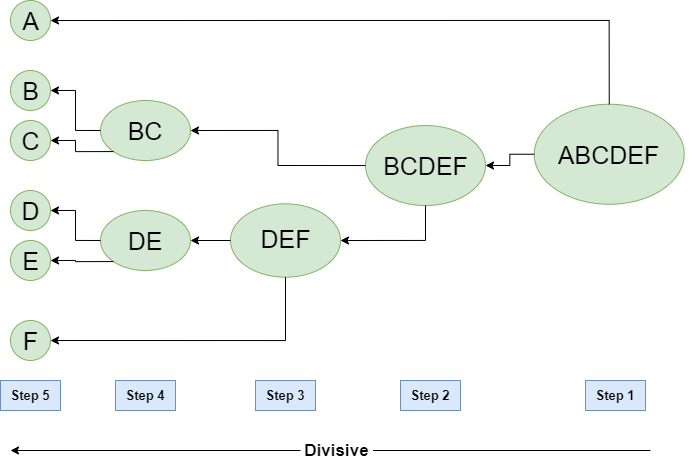

‣Unsupervised Learning
In artificial intelligence, machine learning that takes place in the absence of human supervision is known as unsupervised machine learning. Unsupervised machine learning models, in contrast to
supervised learning,
are given unlabeled data and allow discover patterns and insights on their own—without explicit direction or instruction.
Unsupervised machine learning analyzes and clusters unlabeled datasets using machine learning algorithms. These algorithms find hidden patterns and data without any human intervention, i.e., we don’t give output to our model. The training model has only input parameter values and discovers the groups or patterns on its own.

‣How does unsupervised learning work?
Unsupervised learning works by analyzing unlabeled data to identify patterns and relationships. The data is not labeled with any predefined categories or outcomes, so the algorithm must find these patterns and relationships on its own. This can be a challenging task, but it can also be very rewarding, as it can reveal insights into the data that would not be apparent from a labeled dataset.
Data-set in Figure A is Mall data that contains information about its clients that subscribe to them. Once subscribed they are provided a membership card and the mall has complete information about the customer and his/her every purchase. Now using this data and unsupervised learning techniques, the mall can easily group clients based on the parameters we are feeding in.
The input to the unsupervised learning models is as follows:
- Unstructured data: May contain noisy(meaningless) data, missing values, or unknown data
- Unlabeled data: Data only contains a value for input parameters, there is no targeted value(output). It is easy to collect as compared to the labeled one in the Supervised approach.
‣Unsupervised Learning Algorithms
There are mainly 3 types of Algorithms which are used for Unsupervised dataset.
- Clustering
- Association Rule Learning
- Dimensionality Reduction
1. Clustering
Clustering in unsupervised machine learning is the process of grouping unlabeled data into clusters based on their similarities. The goal of clustering is to identify patterns and relationships in the data without any prior knowledge of the data’s meaning.
Broadly this technique is applied to group data based on different patterns, such as similarities or differences, our machine model finds. These algorithms are used to process raw, unclassified data objects into groups. For example, in the above figure, we have not given output parameter values, so this technique will be used to group clients based on the input parameters provided by our data.
What is Clustering ?
The task of grouping data points based on their similarity with each other is called Clustering or Cluster Analysis. This method is defined under the branch of Unsupervised Learning, which aims at gaining insights from unlabelled data points, that is, unlike supervised learning, we don’t have a target variable. Clustering aims at forming groups of homogeneous data points from a heterogeneous dataset. It evaluates the similarity based on a metric like Euclidean distance, Cosine similarity, Manhattan distance, etc. and then group the points with highest similarity score together.
For Example, In the graph given below, we can clearly see that there are 3 circular clusters forming on the basis of distance.

Now it is not necessary that the clusters formed must be circular in shape. The shape of clusters can be arbitrary. There are many algortihms that work well with detecting arbitrary shaped clusters.
For example, In the below given graph we can see that the clusters formed are not circular in shape.

Uses of Clustering:
Now before we begin with types of clustering algorithms, we will go through the use cases of Clustering algorithms. Clustering algorithms are majorly used for:
- Market Segmentation – Businesses use clustering to group their customers and use targeted advertisements to attract more audience.
- Market Basket Analysis – Shop owners analyze their sales and figure out which items are majorly bought together by the customers. For example, In USA, according to a study diapers and beers were usually bought together by fathers.
- Social Network Analysis – Social media sites use your data to understand your browsing behaviour and provide you with targeted friend recommendations or content recommendations.
- Medical Imaging – Doctors use Clustering to find out diseased areas in diagnostic images like X-rays.
- Anomaly Detection – To find outliers in a stream of real-time dataset or forecasting fraudulent transactions we can use clustering to identify them.
- Simplify working with large datasets – Each cluster is given a cluster ID after clustering is complete. Now, you may reduce a feature set’s whole feature set into its cluster ID. Clustering is effective when it can represent a complicated case with a straightforward cluster ID. Using the same principle, clustering data can make complex datasets simpler.
Some common clustering algorithms
-
K-means Clustering
K-Means Clustering is an Unsupervised Machine Learning algorithm, which groups the unlabeled dataset into different clusters. The article aims to explore the fundamentals and working of k mean clustering along with the implementation.
What is K-means Clustering?
Unsupervised Machine Learning is the process of teaching a computer to use unlabeled, unclassified data and enabling the algorithm to operate on that data without supervision. Without any previous data training, the machine’s job in this case is to organize unsorted data according to parallels, patterns, and variations.
K means clustering, assigns data points to one of the K clusters depending on their distance from the center of the clusters. It starts by randomly assigning the clusters centroid in the space. Then each data point assign to one of the cluster based on its distance from centroid of the cluster. After assigning each point to one of the cluster, new cluster centroids are assigned. This process runs iteratively until it finds good cluster. In the analysis we assume that number of cluster is given in advanced and we have to put points in one of the group.
How k-means clustering works?
We are given a data set of items, with certain features, and values for these features (like a vector). The task is to categorize those items into groups. To achieve this, we will use the K-means algorithm, an unsupervised learning algorithm. ‘K’ in the name of the algorithm represents the number of groups/clusters we want to classify our items into.
(It will help if you think of items as points in an n-dimensional space). The algorithm will categorize the items into k groups or clusters of similarity. To calculate that similarity, we will use the Euclidean distance as a measurement.
The algorithm works as follows:- First, we randomly initialize k points, called means or cluster centroids.
- We categorize each item to its closest mean, and we update the mean’s coordinates, which are the averages of the items categorized in that cluster so far.
- We repeat the process for a given number of iterations and at the end, we have our clusters.
Implementation of K-Means Clustering in Python
import numpy as np import matplotlib.pyplot as plt from sklearn.datasets import make_blobs X,y = make_blobs(n_samples = 500,n_features = 2, centers = 3,random_state = 23) fig = plt.figure(0) plt.grid(True) plt.scatter(X[:,0],X[:,1]) plt.show()

k = 3 clusters = {} np.random.seed(23) for idx in range(k): center = 2*(2*np.random.random( (X.shape[1],))-1) points = [] cluster = { 'center' : center, 'points' : [] } clusters[idx] = cluster clusters

plt.scatter(X[:,0],X[:,1]) plt.grid(True) for i in clusters: center = clusters[i]['center'] plt.scatter(center[0], center[1],marker = '*',c = 'red') plt.show()

-
Hierarchical Clustering
In machine learning, clustering is the unsupervised learning technique that groups the data based on similarity between the set of data. There are different-different types of clustering algorithms in machine learning. Connectivity-based clustering: This type of clustering algorithm builds the cluster based on the connectivity between the data points. Example: Hierarchical clustering
What is Hierarchical Clustering?
Hierarchical clustering is a connectivity-based clustering model that groups the data points together that are close to each other based on the measure of similarity or distance. The assumption is that data points that are close to each other are more similar or related than data points that are farther apart.
A dendrogram, a tree-like figure produced by hierarchical clustering, depicts the hierarchical relationships between groups. Individual data points are located at the bottom of the dendrogram, while the largest clusters, which include all the data points, are located at the top. In order to generate different numbers of clusters, the dendrogram can be sliced at various heights.
The dendrogram is created by iteratively merging or splitting clusters based on a measure of similarity or distance between data points. Clusters are divided or merged repeatedly until all data points are contained within a single cluster, or until the predetermined number of clusters is attained.
Types of Hierarchical Clustering
1.Agglomerative Clustering
2.Divisive clustering
Hierarchical Agglomerative Clustering
It is also known as the bottom-up approach or hierarchical agglomerative clustering (HAC). A structure that is more informative than the unstructured set of clusters returned by flat clustering. This clustering algorithm does not require us to prespecify the number of clusters. Bottom-up algorithms treat each data as a singleton cluster at the outset and then successively agglomerate pairs of clusters until all clusters have been merged into a single cluster that contains all data.
Steps:
- Consider each alphabet as a single cluster and calculate the distance of one cluster from all the other clusters.
- In the second step, comparable clusters are merged together to form a single cluster. Let’s say cluster (B) and cluster (C) are very similar to each other therefore we merge them in the second step similarly to cluster (D) and (E) and at last, we get the clusters [(A), (BC), (DE), (F)]
- We recalculate the proximity according to the algorithm and merge the two nearest clusters([(DE), (F)]) together to form new clusters as [(A), (BC), (DEF)]
- Repeating the same process; The clusters DEF and BC are comparable and merged together to form a new cluster. We’re now left with clusters [(A), (BCDEF)].
- At last, the two remaining clusters are merged together to form a single cluster [(ABCDEF)].
Python implementation of the above algorithm using the scikit-learn library:
from sklearn.cluster import AgglomerativeClustering import numpy as np # randomly chosen dataset X = np.array([[1, 2], [1, 4], [1, 0], [4, 2], [4, 4], [4, 0]]) # here we need to mention the number of clusters # otherwise the result will be a single cluster # containing all the data clustering = AgglomerativeClustering(n_clusters=2).fit(X) # print the class labels print(clustering.labels_)
Hierarchical Divisive clustering
It is also known as a top-down approach. This algorithm also does not require to prespecify the number of clusters. Top-down clustering requires a method for splitting a cluster that contains the whole data and proceeds by splitting clusters recursively until individual data have been split into singleton clusters.

Computing Distance Matrix
While merging two clusters we check the distance between two every pair of clusters and merge the pair with the least distance/most similarity. But the question is how is that distance determined. There are different ways of defining Inter Cluster distance/similarity. Some of them are:
- Min Distance: Find the minimum distance between any two points of the cluster.
- Max Distance: Find the maximum distance between any two points of the cluster.
- Group Average: Find the average distance between every two points of the clusters.
- Ward’s Method: The similarity of two clusters is based on the increase in squared error when two clusters are merged.
Python implementation of the above algorithm using the scikit-learn library:
import numpy as np from scipy.cluster.hierarchy import dendrogram, linkage import matplotlib.pyplot as plt # randomly chosen dataset X = np.array([[1, 2], [1, 4], [1, 0], [4, 2], [4, 4], [4, 0]]) # Perform hierarchical clustering Z = linkage(X, 'ward') # Plot dendrogram dendrogram(Z) plt.title('Hierarchical Clustering Dendrogram') plt.xlabel('Data point') plt.ylabel('Distance') plt.show()
-
DBSCAN Clustering
Clustering analysis or simply Clustering is basically an Unsupervised learning method that divides the data points into a number of specific batches or groups, such that the data points in the same groups have similar properties and data points in different groups have different properties in some sense. It comprises many different methods based on differential evolution. E.g. K-Means (distance between points), Affinity propagation (graph distance), Mean-shift (distance between points), DBSCAN (distance between nearest points), Gaussian mixtures (Mahalanobis distance to centers), Spectral clustering (graph distance), etc.
Density-Based Spatial Clustering Of Applications With Noise (DBSCAN)
Clusters are dense regions in the data space, separated by regions of the lower density of points. The DBSCAN algorithm is based on this intuitive notion of “clusters” and “noise”. The key idea is that for each point of a cluster, the neighborhood of a given radius has to contain at least a minimum number of points.
Why DBSCAN?
Partitioning methods (K-means, PAM clustering) and hierarchical clustering work for finding spherical-shaped clusters or convex clusters. In other words, they are suitable only for compact and well-separated clusters. Moreover, they are also severely affected by the presence of noise and outliers in the data.Real-life data may contain irregularities, like:
1.Clusters can be of arbitrary shape such as those shown in the figure below.
2.Data may contain noise.
Parameters Required For DBSCAN Algorithm
- eps: It defines the neighborhood around a data point i.e. if the distance between two points is lower or equal to ‘eps’ then they are considered neighbors. If the eps value is chosen too small then a large part of the data will be considered as an outlier. If it is chosen very large then the clusters will merge and the majority of the data points will be in the same clusters. One way to find the eps value is based on the k-distance graph.
- MinPts: Minimum number of neighbors (data points) within eps radius. The larger the dataset, the larger value of MinPts must be chosen. As a general rule, the minimum MinPts can be derived from the number of dimensions D in the dataset as, MinPts >= D+1. The minimum value of MinPts must be chosen at least 3.
Steps Used In DBSCAN Algorithm
- Find all the neighbor points within eps and identify the core points or visited with more than MinPts neighbors.
- For each core point if it is not already assigned to a cluster, create a new cluster.
- Find recursively all its density-connected points and assign them to the same cluster as the core point. A point a and b are said to be density connected if there exists a point c which has a sufficient number of points in its neighbors and both points a and b are within the eps distance. This is a chaining process. So, if b is a neighbor of c, c is a neighbor of d, and d is a neighbor of e, which in turn is neighbor of a implying that b is a neighbor of a.
- Iterate through the remaining unvisited points in the dataset. Those points that do not belong to any cluster are noise.
Implementation Of DBSCAN Algorithm Using Machine Learning In Python
import matplotlib.pyplot as plt import numpy as np from sklearn.cluster import DBSCAN from sklearn import metrics from sklearn.datasets import make_blobs from sklearn.preprocessing import StandardScaler from sklearn import datasets # Load data in X X, y_true = make_blobs(n_samples=300, centers=4, cluster_std=0.50, random_state=0) db = DBSCAN(eps=0.3, min_samples=10).fit(X) core_samples_mask = np.zeros_like(db.labels_, dtype=bool) core_samples_mask[db.core_sample_indices_] = True labels = db.labels_ # Number of clusters in labels, ignoring noise if present. n_clusters_ = len(set(labels)) - (1 if -1 in labels else 0) # Plot result # Black removed and is used for noise instead. unique_labels = set(labels) colors = ['y', 'b', 'g', 'r'] print(colors) for k, col in zip(unique_labels, colors): if k == -1: # Black used for noise. col = 'k' class_member_mask = (labels == k) xy = X[class_member_mask & core_samples_mask] plt.plot(xy[:, 0], xy[:, 1], 'o', markerfacecolor=col, markeredgecolor='k', markersize=6) xy = X[class_member_mask & ~core_samples_mask] plt.plot(xy[:, 0], xy[:, 1], 'o', markerfacecolor=col, markeredgecolor='k', markersize=6) plt.title('number of clusters: %d' % n_clusters_) plt.show()
2. Association Rule Learning
Association rule learning is also known as association rule mining is a common technique used to discover associations in unsupervised machine learning. This technique is a rule-based ML technique that finds out some very useful relations between parameters of a large data set. This technique is basically used for market basket analysis that helps to better understand the relationship between different products. For e.g. shopping stores use algorithms based on this technique to find out the relationship between the sale of one product w.r.t to another’s sales based on customer behavior. Like if a customer buys milk, then he may also buy bread, eggs, or butter. Once trained well, such models can be used to increase their sales by planning different offers.

- Apriori Algorithm: A Classic Method for Rule Induction
- FP-Growth Algorithm: An Efficient Alternative to Apriori
- Eclat Algorithm: Exploiting Closed Itemsets for Efficient Rule Mining
- Efficient Tree-based Algorithms: Handling Large Datasets with Scalability
3. Dimensionality Reduction
Dimensionality reduction is the process of reducing the number of features in a dataset while preserving as much information as possible. This technique is useful for improving the performance of machine learning algorithms and for data visualization. Examples of dimensionality reduction algorithms includeDimensionality reduction is the process of reducing the number of features in a dataset while preserving as much information as possible

- Principal Component Analysis (PCA): Linear Transformation for Reduced Dimensions
- Linear Discriminant Analysis (LDA): Dimensionality Reduction for Discrimination
- Non-negative Matrix Factorization (NMF): Decomposing Data into Non-negative Components
- Locally Linear Embedding (LLE): Preserving Local Geometry in Reduced Dimensions
- Isomap: Capturing Global Relationships in Reduced Dimensions
Challenges of Unsupervised Learning
Here are the key challenges of unsupervised learning
- Evaluation: Assessing the performance of unsupervised learning algorithms is difficult without predefined labels or categories.
- Interpretability: Understanding the decision-making process of unsupervised learning models is often challenging.
- Overfitting: Unsupervised learning algorithms can overfit to the specific dataset used for training, limiting their ability to generalize to new data.
- Data quality: Unsupervised learning algorithms are sensitive to the quality of the input data. Noisy or incomplete data can lead to misleading or inaccurate results.
- Computational complexity: Some unsupervised learning algorithms, particularly those dealing with high-dimensional data or large datasets, can be computationally expensive.
Advantages of Unsupervised learning
- No labeled data required: Unlike supervised learning, unsupervised learning does not require labeled data, which can be expensive and time-consuming to collect.
- Can uncover hidden patterns: Unsupervised learning algorithms can identify patterns and relationships in data that may not be obvious to humans.
- Can be used for a variety of tasks: Unsupervised learning can be used for a variety of tasks, such as clustering, dimensionality reduction, and anomaly detection.
- Can be used to explore new data: Unsupervised learning can be used to explore new data and gain insights that may not be possible with other methods.
Disadvantages of Unsupervised learning
- Difficult to evaluate: It can be difficult to evaluate the performance of unsupervised learning algorithms, as there are no predefined labels or categories against which to compare results
- Can be difficult to interpret: It can be difficult to understand the decision-making process of unsupervised learning models.
- Can be sensitive to the quality of the data: Unsupervised learning algorithms can be sensitive to the quality of the input data. Noisy or incomplete data can lead to misleading or inaccurate results.
- Can be computationally expensive: Some unsupervised learning algorithms, particularly those dealing with high-dimensional data or large datasets, can be computationally expensive
Applications of Unsupervised learning
- Customer segmentation: Unsupervised learning can be used to segment customers into groups based on their demographics, behavior, or preferences. This can help businesses to better understand their customers and target them with more relevant marketing campaigns.
- Fraud detection: Unsupervised learning can be used to detect fraud in financial data by identifying transactions that deviate from the expected patterns. This can help to prevent fraud by flagging these transactions for further investigation.
- Recommendation systems: Unsupervised learning can be used to recommend items to users based on their past behavior or preferences. For example, a recommendation system might use unsupervised learning to identify users who have similar taste in movies, and then recommend movies that those users have enjoyed.
- Natural language processing (NLP): Unsupervised learning is used in a variety of NLP tasks, including topic modeling, document clustering, and part-of-speech tagging.
- Image analysis: Unsupervised learning is used in a variety of image analysis tasks, including image segmentation, object detection, and image pattern recognition.
Conclusion
Unsupervised learning is a versatile and powerful tool for exploring and understanding unlabeled data. It has a wide range of applications, from customer segmentation to fraud detection to image analysis. As the field of machine learning continues to develop, unsupervised learning is likely to play an increasingly important role in various domains.